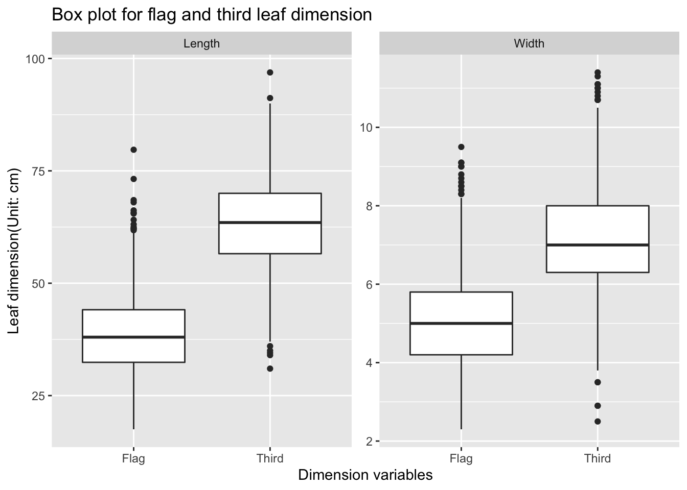
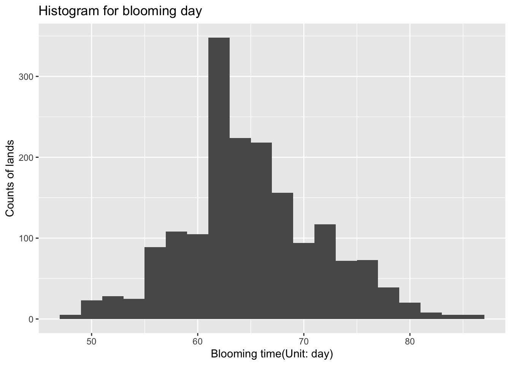
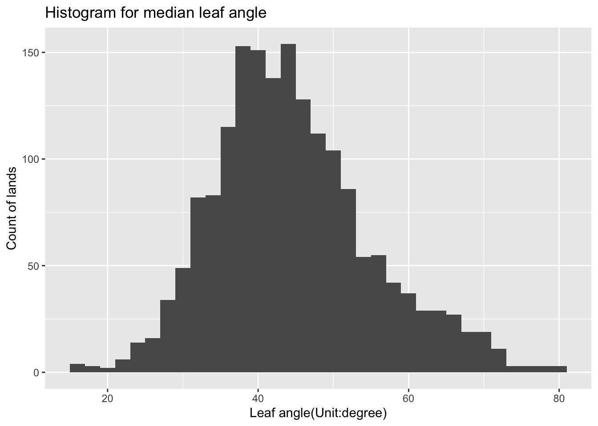
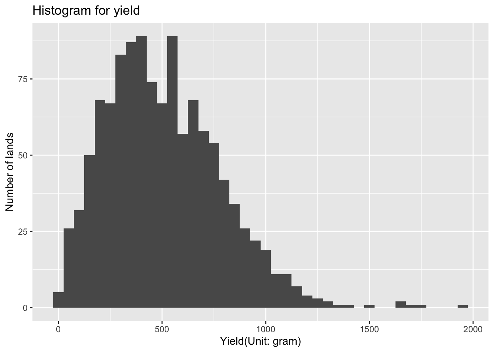
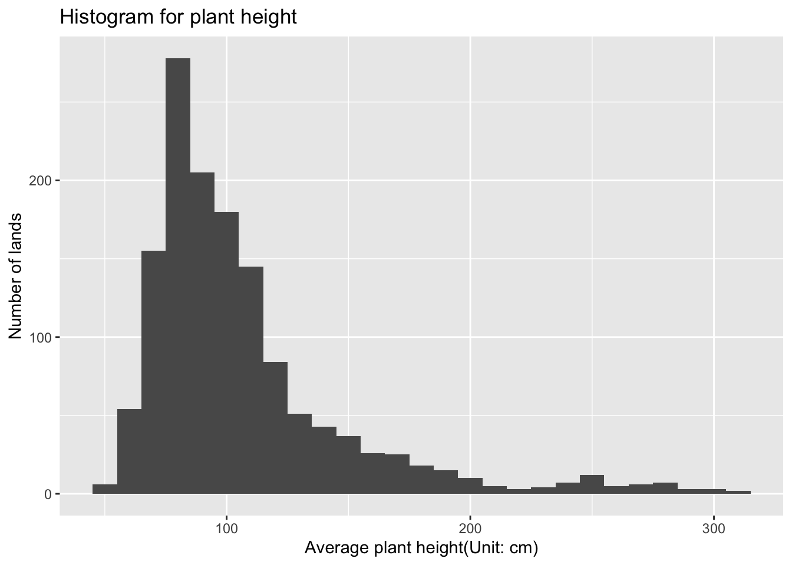
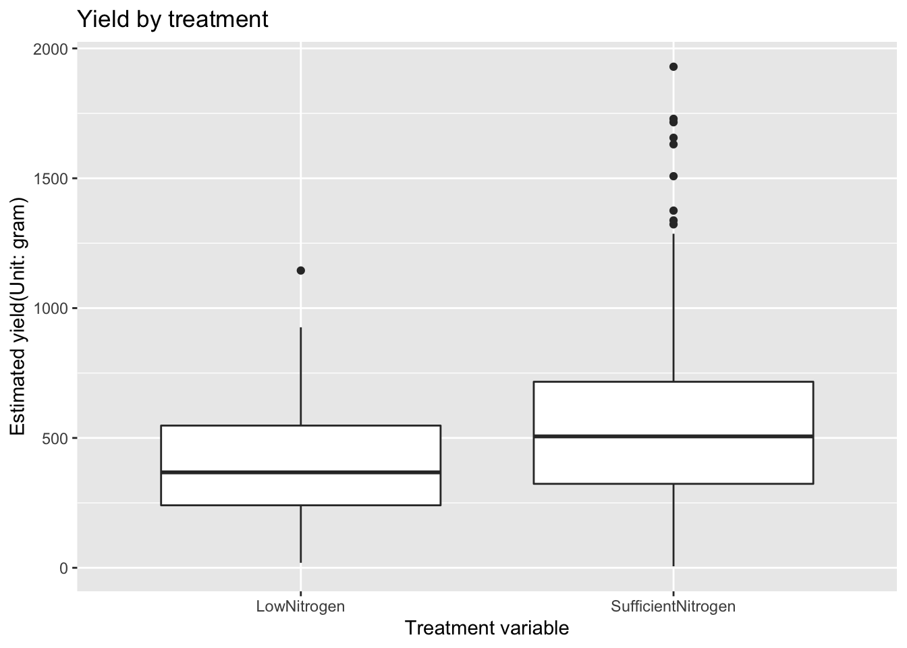
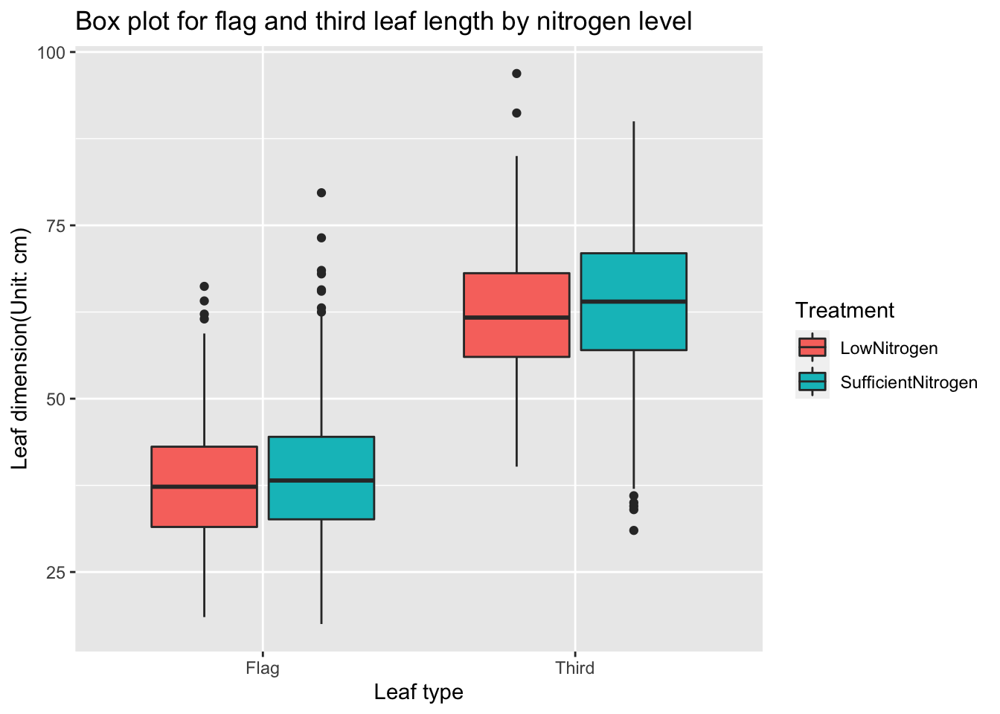

The dataset is the agronomic traits that were measured in a sorghum field experiment with two levels of nitrogen treatment and around 400 genotypes. Hopefully we will also find the sub-population information of these genotypes as an additional categorical attribute.
Each row represents a small pieces of land with it’s unique row number and column number which contains around 10 individual sorghum plants. The explanation for each column stated below:
Column name
Description
Unit
Plot ID&Sorghum Accession
Unique ID for each plants
Constant
SNPDataID
Unique ID
/
Row&Column
spatial data for sorghum plants
Constant
Block
Blocking number
Constant
Treatment
two levels of nitrogen treatment
/
DaysToBloom
How many days until the sorghum flower bloom(unit:day)
days
MedianLeafAngle
Median value of leaf angle for each 10 individual sorghum plants(unit:degree)
degree
LeafAngleSDV
Standard deviation of leaf angle for 10 individual sorghum plants
Constant
PoorStand
If half of the sorghum plants are poor stand, if yes then the answer is Y
Y/N
PaniclesPerPlot
How many panicles per plot have
Constant
PanicleGrainWeight
How much grain weight for each panicle
Gram
EstimatedPlotYield
The estimated plot yield for 10 individual sorghum plants
Gram
FlagLeafLength
The mean value of the flag leaf’s length for each 10 individual sorghum plants
cm
FlagLeafWidth
The mean value of the flag leaf’s width for each 10 individual sorghum plants
cm
ExtantLeafNumber
The number of visible leaves on the main stalk at maturity stage.
Constant
PlantHeight
The mean value of the plant height for each 10 individual sorghum plants
cm
ThirdLeafLength
The mean value of the third leaf’s length for each 10 individual sorghum plants
cm
ThirdLeafWidth
The mean value of the third leaf’s width for each 10 individual sorghum plants
cm
Data cleaning
##delete the useless columnnewdat<- dat[,c(-1,-3)]##there exist missing data in several rows at different column, we will rearrange it during analysis
Data exploring
summary(newdat)
SorghumAccession Row Column Block
Length:1848 Min. : 2.00 Min. : 1.00 Min. :4.000
Class :character 1st Qu.:17.00 1st Qu.: 9.00 1st Qu.:5.000
Mode :character Median :36.00 Median :16.00 Median :6.000
Mean :35.46 Mean :16.49 Mean :6.018
3rd Qu.:53.00 3rd Qu.:24.00 3rd Qu.:7.000
Max. :69.00 Max. :32.00 Max. :8.000
NA's :1
Treatment DaysToBloom MedianLeafAngle LeafAngleSDV
Length:1848 Min. :48.00 Min. :15.40 Min. : 0.000
Class :character 1st Qu.:62.00 1st Qu.:37.60 1st Qu.: 3.950
Mode :character Median :65.00 Median :43.50 Median : 5.740
Mean :65.67 Mean :44.66 Mean : 6.136
3rd Qu.:69.00 3rd Qu.:50.60 3rd Qu.: 7.800
Max. :87.00 Max. :80.00 Max. :19.680
NA's :86 NA's :80 NA's :143
PoorStand? PaniclesPerPlot PanicleGrainWeight EstimatedPlotYield
Length:1848 Min. : 1.00 Min. : 0.60 Min. : 5.6
Class :character 1st Qu.:11.00 1st Qu.: 21.40 1st Qu.: 300.0
Mode :character Median :14.00 Median : 33.20 Median : 475.2
Mean :14.89 Mean : 34.79 Mean : 507.5
3rd Qu.:18.00 3rd Qu.: 46.10 3rd Qu.: 682.7
Max. :80.00 Max. :135.90 Max. :1929.6
NA's :507 NA's :327 NA's :685
FlagLeafLength FlagLeafWidth ExtantLeafNumber PlantHeight
Min. :17.50 Min. :2.300 Min. : 5 Min. : 46.0
1st Qu.:32.40 1st Qu.:4.200 1st Qu.:11 1st Qu.: 80.0
Median :38.00 Median :5.000 Median :12 Median : 95.0
Mean :38.64 Mean :5.054 Mean :12 Mean :107.5
3rd Qu.:44.10 3rd Qu.:5.800 3rd Qu.:13 3rd Qu.:119.0
Max. :79.70 Max. :9.500 Max. :19 Max. :313.0
NA's :505 NA's :504 NA's :458 NA's :459
ThirdLeafLength ThirdLeafWidth
Min. :31.00 Min. : 2.500
1st Qu.:56.58 1st Qu.: 6.300
Median :63.50 Median : 7.000
Mean :63.29 Mean : 7.107
3rd Qu.:70.00 3rd Qu.: 8.000
Max. :96.90 Max. :11.400
NA's :592 NA's :592
Data analysis
1. check the distribution for numeric output column
1.1 box plot for leaf dimension
library(ggplot2)library(dplyr)require(reshape2)
Loading required package: reshape2
Attaching package: 'reshape2'
The following object is masked from 'package:tidyr':
smiths
library(tidyr)###select leaf dimention data to plot a box plot###select required columnanalysis_le<- newdat[,c(13,14,17,18)]###clean navalueclean_le<- analysis_le%>%melt()%>%###cleaning na valuedrop_na(value)%>%mutate(dimension=sub(".*f", "",variable), leaf=sub("Leaf.*","",variable))
No id variables; using all as measure variables
###plot box plotggplot(clean_le,aes(x=leaf, y=value))+geom_boxplot()+labs(title ="Box plot for flag and third leaf dimension",x='Dimension variables',y='Leaf dimension(Unit: cm)' ) +facet_wrap(~dimension, scales ="free")

The first thing we want to explore is if there exist some difference between the leaf dimension in flag leaf and third leaf. Thus, we got a boxplot for flag and third leaf.
Based on the plot above, we can see that overall the dimension of the third leaf is larger than the flag leaf which is reasonable. Also, we noticed that the outliers for flag leafs are all occur in the top for both length and width, same for the third leaf which the outliers occur in the both side. Thus we thought if the leaf length has the relationship with leaf width.
##clean NA valuecorr_ana<-na.omit(analysis_le)##plot a scatter plot first to checkggplot(corr_ana,aes(x=FlagLeafLength, y=FlagLeafWidth))+geom_point()+labs(title ="Scatter plot for flag leaf dimension",x='Flag leaf Length (Unit: cm)',y='Flag leaf width (Unit: cm)' )
ggplot(corr_ana,aes(x=ThirdLeafLength, y=ThirdLeafWidth))+geom_point()+labs(title ="Scatter plot for third leaf dimension",x='Third leaf Length (Unit: cm)',y='Third leaf width (Unit: cm)' )
###combine these two plot togetherLeaf_type <-c("Third leaf"="#619CFF", "Flag leaf"="#F8766D")ggplot(corr_ana)+geom_point(aes(x=ThirdLeafLength, y=ThirdLeafWidth, colour='Third leaf'))+geom_point(aes(x=FlagLeafLength, y=FlagLeafWidth, colour='Flag leaf'))+labs(title ="Scatter plot for flag and third leaf's dimension",x='leaf Length (Unit: cm)',y='leaf width (Unit: cm)' )+scale_color_manual(values = Leaf_type)
Based on the two scatter plot above, we can briefly check if there is relationship between leaf length and leaf width. For the flag leaf dimension plot, we can easily find a ellipse which shows there is positive relationship between flag leaf length and flag leaf width. For the third leaf dimension plot, the ellipse is hard to find and it more like a circle which means the relationship between third leaf length and width may not so large. Thus, further analysis needs to be done to draw a clear conclusion.
1.2 histogram for blooming day
##create some histogram for each variable to have a basic understand for each variable###blooming dateanalysis_bloom<-melt(newdat[,c(6)])
No id variables; using all as measure variables
###clean navalueclean_bloom<- analysis_bloom%>%###cleaning na valuedrop_na(value)###plot box plotggplot(clean_bloom,aes(x=value))+geom_histogram(binwidth =2)+labs(title ="Histogram for blooming day",x='Blooming time(Unit: day)',y='Counts of lands' )

Then, we want to check the distribution for multiple variables to have a basic understanding for each variaible. Thus, we create a histogram for each one and check it’s distribution.
Based on the histogram above, we know that usually it takes around 50 to 80 days for the sorghum flower bloom.The highest probability range is around 60 to 70 days.
1.3 histogram for median leaf angle
analysis_angle<-melt(newdat[,c(7)])
No id variables; using all as measure variables
###clean navalueclean_angle<- analysis_angle%>%###cleaning na valuedrop_na(value)###plot box plotggplot(clean_angle,aes(x=value))+geom_histogram(binwidth =2)+labs(title ="Histogram for median leaf angle",x='Leaf angle(Unit:degree)',y='Count of lands' )

Based on the histogram above, we know that usually the median value of leaf angle for each 10 individual sorghum plants is around 40 to 45 degree.
1.4 histogram for panicle amount
analysis_panicle<-melt(newdat[,c(10)])
No id variables; using all as measure variables
###clean navalueclean_panicle<- analysis_panicle%>%###cleaning na valuedrop_na(value)###plot box plotggplot(clean_panicle,aes(x=value))+geom_histogram(binwidth =2)+labs(title ="Histogram for panicle amount",x='Panicle amount',y='Number of lands' )
Based on the histogram above, we know that usually the panicles per plot have is around 0 to 20 where the highest possibility is around 13.
1.5 histogram for grain weight
analysis_grain<-melt(newdat[,c(11)])
No id variables; using all as measure variables
###clean navalueclean_grain<- analysis_grain%>%###cleaning na valuedrop_na(value)###plot box plotggplot(clean_grain,aes(x=value))+geom_histogram(binwidth =5)+labs(title ="Histogram for grain weight",x='Average grain Weight(Unit: gram)',y='Number of lands' )
Based on the histogram above, we know that usually the grain weight for each panicle is around 30 to 50 grams.
1.6 histogram for yield
analysis_yield<-melt(newdat[,c(12)])
No id variables; using all as measure variables
###clean navalueclean_yield<- analysis_yield%>%###cleaning na valuedrop_na(value)###plot box plotggplot(clean_yield,aes(x=value))+geom_histogram(binwidth =50)+labs(title ="Histogram for yield",x='Yield(Unit: gram)',y='Number of lands' )

Based on the histogram above, we know that the estimated plot yield for 10 individual sorghum plants is around 0 to 1000 grams where the highest possibility range is around 300 to 500 gram.
1.7 histogram for plant height
analysis_height<-melt(newdat[,c(16)])
No id variables; using all as measure variables
###clean navalueclean_height<- analysis_height%>%###cleaning na valuedrop_na(value)###plot box plotggplot(clean_height,aes(x=value))+geom_histogram(binwidth =10) +labs(title ="Histogram for plant height",x='Average plant height(Unit: cm)',y='Number of lands' )

Based on the histogram above, we know range for plot height is around 30 to 300cm where usually the height will be around 70 cm.
2.Explore the effect of the nitrogen treatment for leaf dimension/plant height/yield.
After exploring each variable of our dataset, the next thing we want to do is to explore the effect of the nitrogen treatment in different area like leaf dimension, plant height and yield. Hopefully, we can find some difference between different treatment.
2.1 plant height
effect_height<-newdat[,c(5,16)]###clean navalueclean_eff_height<- effect_height%>%###cleaning na valuedrop_na(PlantHeight)ggplot(clean_eff_height, aes(x=Treatment, y=PlantHeight))+geom_boxplot() +labs(title ="Plant height by nitrogen level",y='Average plant height(Unit: cm)',x='Treatment variables' )
ggplot(clean_eff_height, aes(x=PlantHeight, fill=Treatment))+geom_histogram(alpha=0.5) +labs(title ="Plant height by nitrogen level",x='Average plant height(Unit: cm)',y='Number of lands' )
`stat_bin()` using `bins = 30`. Pick better value with `binwidth`.
Based on the boxplot above, the mean value and distribution for different treatment are all the same. Thus,we can say that there is no significant difference effect of the treatment. The histogram also support this result.
2.2 yield
effect_yield<-newdat[,c(5,12)]###clean navalueclean_eff_yield<- effect_yield%>%###cleaning na valuedrop_na(EstimatedPlotYield)ggplot(clean_eff_yield, aes(x=Treatment, y=EstimatedPlotYield))+geom_boxplot() +labs(title ="Yield by treatment",x='Treatment variable',y='Estimated yield(Unit: gram)' )
Based on the boxplot above, we can see that the mean estimated yield for sufficient nitrogen level is higher than the yield for low nitrogen level which is a interesting finding. Also, we noticed that there exists some outlier points with sufficient nitrogen treatment level. The yield for these points are more than twice larger than the upper quantile yield for the low nitrogen treatment.
2.3 leaf length
Then we separate the leaf’s length data and width data and plot the boxplot for different leaf by different nitrogen level to see if there exist some difference between them.
###select required rowleaf_length<- newdat[,c(5,13,17)]leaf_length %>%rename( # here we rename the columns so things look nice in the graph laterFlag = FlagLeafLength,Third = ThirdLeafLength ) %>%pivot_longer( # then we collapse the columns for each side of the brain into a single column, with a second column holding size valuescols =c("Flag", "Third"),names_to ="Side",values_to ="Size" ) %>%###clean na valuedrop_na(Size)%>%# then we plot and give it a titleggplot(aes(x = Side,y = Size,fill = Treatment ) ) +geom_boxplot() +labs(title ="Box plot for flag and third leaf length by nitrogen level",x='Leaf type',y='Leaf dimension(Unit: cm)' )

Based on the box plot above, we can only say the sufficient nitrogen may have a little influence on leaf length but overall there is no difference for leaf’s dimension in difference treatment since there is a large proportion of overlapping for leaf length and width between two treatment.
2.4 leaf width
###select required rowleaf_width<- newdat[,c(5,14,18)]leaf_width %>%rename( # here we rename the columns so things look nice in the graph laterFlag = FlagLeafWidth,Third = ThirdLeafWidth ) %>%pivot_longer( # then we collapse the columns for each side of the brain into a single column, with a second column holding size valuescols =c("Flag", "Third"),names_to ="Side",values_to ="Size" ) %>%###clean na valuedrop_na(Size)%>%# then we plot and give it a titleggplot(aes(x = Side,y = Size,fill = Treatment ) ) +geom_boxplot() +labs(title ="Box plot for flag and third leaf width by nitrogen level",x='Leaf type',y='Leaf dimension(Unit: cm)' )

Based on the boxplot above, same as the previous analysis, we can only say the sufficient nitrogen level has no influence on flag leaf width and it may has a little negative influence on third leafwidth but overall there is no influence since there is a large overlapping between the dimension in two treatments.
3. We can visualize the potential spatial effect on plant growth, indicated by plant height or flowering time, by plotting the field row and column layout and color-coding with the phenotypes.
4. We can investigate the relationship between plant phenotypes, for example plotting scatterplots and regression lines bewtween each two agronomic traits.
Warning in par(usr): argument 1 does not name a graphical parameter
Warning in par(usr): argument 1 does not name a graphical parameter
Warning in par(usr): argument 1 does not name a graphical parameter
library(tidyverse)library(ggpubr)# Define UI for application that draws a histogramui <-fluidPage(# Application titletitlePanel("The relationship between phenotypes and final yield"),# Sidebar with a slider input for the number of binssidebarPanel(selectInput("phenotype","Choose a phenotypic trait to investigate",list(`Growth`=list("DaysToBloom", "MedianLeafAngle", "FlagLeafLength", "FlagLeafWidth", "ExtantLeafNumber","PlantHeight", "ThirdLeafLength", "ThirdLeafWidth"),`Reproductive`=list("PaniclesPerPlot", "PanicleGrainWeight")) ) ),# Show a plot of the generated distributionmainPanel(plotOutput("Scatterplot") ))# Define server logic required to draw a histogramserver <-function(input, output) { output$Scatterplot <-renderPlot({ dat_scatter <- dat[,c(input$phenotype, "EstimatedPlotYield")]ggplot(data=dat_scatter,aes(x = Phenotype, y=Yield)) +geom_point() +stat_smooth(method ="lm")+stat_regline_equation(aes(label =paste(..rr.label.., sep ="~~~~")))+xlab(input$phenotype)+ylab("Yield (g)")print(gg) })}# Bind ui and server togethershinyApp(ui, server)
Conclusion
In conclusion, when we explore each variable, we noticed that:
The dimension of the third leaf is larger than the flag leaf
There may exists positive relationship between flag leaf length and flag leaf width
Usually it takes around 50 to 80 days for the sorghum flower bloom.The highest probability range is around 60 to 70 days.
The median value of leaf angle for each 10 individual sorghum plants is around 40 to 45 degree.
The grain weight for panicle is around 30 to 50 grams.
The estimated plot yield for 10 individual sorghum plants is around 0 to 1000 grams where the highest possibility range is around 300 to 600 gram.
The range for plot height is around 30 to 300cm where usually the height will be around 70 cm./
Then when we explore the effect of the nitrogen treatment in different area, we find out that sufficient nitrogen level has a positive influence in yield and may lead the occurrence of some extremely large yield plants. However, there is no sufficient evidence to shows that it has any relationship between plant height and leaf dimension.